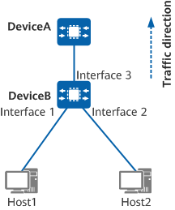

Example for Configuring WRED
Networking Requirements
Host1 and Host2 provide voice, video, and data services, and the 802.1p priorities of the service packets are 6, 5, and 2, respectively. Traffic of these services is transmitted through DeviceB and then DeviceA. To reduce the impact of network congestion and guarantee high-priority services that require low latency, set congestion management parameters according to Table 1.
Service Type |
CoS |
Lower Drop Threshold (%) |
Upper Drop Threshold (%) |
Drop Probability (%) |
|---|---|---|---|---|
Voice |
EF |
75 |
100 |
10 |
Video |
AF3 |
62 |
75 |
20 |
Data |
AF1 |
37 |
62 |
40 |

In this example, interface 1, interface 2, and interface 3 represent 10GE 0/0/1, 10GE 0/0/2, and 10GE 0/0/3, respectively.

Procedure
- Configure VLANs for interfaces so that devices can communicate with each other at the link layer.
# Configure 10GE 0/0/3 on DeviceB as a trunk interface. Add 10GE 0/0/1 to VLAN 100, 10GE 0/0/2 to VLAN 200, and 10GE 0/0/3 to VLAN 100 and VLAN 200.
<HUAWEI> system-view [HUAWEI] sysname DeviceB [DeviceB] vlan batch 100 200 [DeviceB] interface 10ge 0/0/1 [DeviceB-10GE0/0/1] portswitch [DeviceB-10GE0/0/1] port link-type access [DeviceB-10GE0/0/1] port default vlan 100 [DeviceB-10GE0/0/1] quit [DeviceB] interface 10ge 0/0/2 [DeviceB-10GE0/0/2] portswitch [DeviceB-10GE0/0/2] port link-type access [DeviceB-10GE0/0/2] port default vlan 200 [DeviceB-10GE0/0/2] quit [DeviceB] interface 10ge 0/0/3 [DeviceB-10GE0/0/3] portswitch [DeviceB-10GE0/0/3] port link-type trunk [DeviceB-10GE0/0/3] port trunk allow-pass vlan 100 200 [DeviceB-10GE0/0/3] quit
- Configure priority mapping to map 802.1p values in voice, data, and video packets to different CoS values and colors.
# Create the DiffServ domain ds1, and map 802.1p values 6, 5, and 2 to CoS values EF, AF3, and AF1, respectively.
[DeviceB] diffserv domain ds1 [DeviceB-dsdomain-ds1] 8021p-inbound 6 phb ef [DeviceB-dsdomain-ds1] 8021p-inbound 5 phb af3 [DeviceB-dsdomain-ds1] 8021p-inbound 2 phb af1 [DeviceB-dsdomain-ds1] quit
# Configure inbound interfaces 10GE 0/0/1 and 10GE 0/0/2 of DeviceB to perform mapping based on the outer 802.1p value, and bind the interfaces to the DiffServ domain.
[DeviceB] interface 10ge 0/0/1 [DeviceB-10GE0/0/1] trust 8021p outer [DeviceB-10GE0/0/1] trust upstream ds1 [DeviceB-10GE0/0/1] quit [DeviceB] interface 10ge 0/0/2 [DeviceB-10GE0/0/2] trust 8021p outer [DeviceB-10GE0/0/2] trust upstream ds1 [DeviceB-10GE0/0/2] quit
- Configure a WRED drop profile to mitigate or eliminate congestion for packets of different service packets upon congestion.
# Create WRED drop profiles wred1, wred2, and wred3 on DeviceB.
[DeviceB] drop-profile wred1 [DeviceB-drop-wred1] color blind low-limit 75 high-limit 100 discard-percentage 10 [DeviceB-drop-wred1] quit [DeviceB] drop-profile wred2 [DeviceB-drop-wred2] color blind low-limit 62 high-limit 75 discard-percentage 20 [DeviceB-drop-wred2] quit [DeviceB] drop-profile wred3 [DeviceB-drop-wred3] color blind low-limit 37 high-limit 62 discard-percentage 40 [DeviceB-drop-wred3] quit
# Apply the WRED drop profiles to queues on the outbound interface of DeviceB.
[DeviceB] interface 10ge 0/0/3 [DeviceB-10GE0/0/3] qos queue 5 wred wred1 [DeviceB-10GE0/0/3] qos queue 3 wred wred2 [DeviceB-10GE0/0/3] qos queue 1 wred wred3 [DeviceB-10GE0/0/3] quit
Verifying the Configuration
# Check the configuration of the DiffServ domain ds1. You can see that the 802.1p values 6, 5, and 2 in the DiffServ domain are mapped to the internal priorities EF, AF3, and AF1, respectively.
<DeviceB> display diffserv domain name ds1
Diffserv domain name:ds1
8021p-inbound 0 phb be green
8021p-inbound 1 phb af1 green
8021p-inbound 2 phb af1 green
8021p-inbound 3 phb af3 green
8021p-inbound 4 phb af4 green
8021p-inbound 5 phb af3 green
8021p-inbound 6 phb ef green
8021p-inbound 7 phb cs7 green
8021p-outbound be green map 0
8021p-outbound be yellow map 0
8021p-outbound be red map 0
...
# Check the WRED drop profile configurations.
<DeviceB> display drop-profile
Drop-profile[2]: default
Color Mode Low-limit High-limit Unit Discard(%)
-----------------------------------------------------------------
Blind Percentage 100 100 % 100
-----------------------------------------------------------------
Drop-profile[2]: wred1
Color Mode Low-limit High-limit Unit Discard(%)
-----------------------------------------------------------------
Blind Percentage 75 100 % 10
-----------------------------------------------------------------
Drop-profile[3]: wred2
Color Mode Low-limit High-limit Unit Discard(%)
-----------------------------------------------------------------
Blind Percentage 62 75 % 20
-----------------------------------------------------------------
Drop-profile[4]: wred3
Color Mode Low-limit High-limit Unit Discard(%)
-----------------------------------------------------------------
Blind Percentage 37 62 % 40
-----------------------------------------------------------------
# Check the configuration of 10GE 0/0/3. You can see the scheduling parameters of queues with different CoS values.
<DeviceB> display qos configuration interface 10GE 0/0/3 interface 10GE0/0/3 -------------------------------------------------------------------------- trust flag : - diffserv domain : default dei enable : - port priority : 0 phb marking 8021p : disable phb marking dscp : disable phb marking exp : - port wred : - port lr : cir = -, cbs = - port car inbound : - port car outbound : - schedule profile : - -------------------------------------------------------------------------- queue shaping schedule wred cir pir cbs pbs -------------------------------------------------------------------------- 0 - - drr - - - weight = 10 1 - - drr wred3 - - weight = 10 2 - - drr - - - weight = 10 3 - - drr wred2 - - weight = 10 4 - - drr - - - weight = 10 5 - - drr wred1 - - weight = 10 6 - - drr - - - weight = 10 7 - - drr - - - weight = 10 --------------------------------------------------------------------------
Configuration Scripts
DeviceB
# sysname DeviceB # drop-profile wred1 color blind low-limit 75 high-limit 100 discard-percentage 10 # drop-profile wred2 color blind low-limit 62 high-limit 75 discard-percentage 20 # drop-profile wred3 color blind low-limit 37 high-limit 62 discard-percentage 40 # vlan batch 100 200 # diffserv domain ds1 8021p-inbound 2 phb af1 green 8021p-inbound 5 phb af3 green 8021p-inbound 6 phb ef green # interface 10GE0/0/1 portswitch port link-type access port default vlan 100 trust upstream ds1 trust 8021p outer # interface 10GE0/0/2 portswitch port link-type access port default vlan 200 trust upstream ds1 trust 8021p outer # interface 10GE0/0/3 portswitch port link-type trunk port trunk allow-pass vlan 100 200 qos queue 1 wred wred3 qos queue 3 wred wred2 qos queue 5 wred wred1 # return